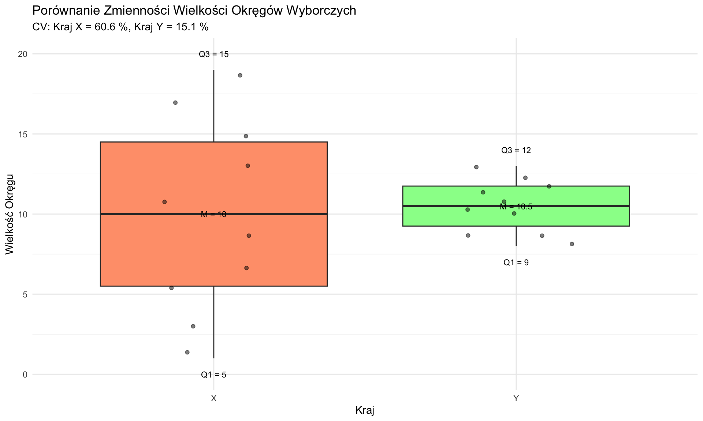

dane <- c(2, 4, 4, 5, 5, 7, 9)
mean(dane)[1] 5.142857Statystyki opisowe są fundamentalnymi narzędziami w badaniach nauk społecznych, zapewniającymi zwięzłe podsumowanie charakterystyk danych. Służą kilku kluczowym funkcjom:
W tym rozdziale zbadamy różne statystyki opisowe, ich obliczenia, interpretacje i ograniczenia.
Zanim zagłębimy się w konkretne miary, kluczowe jest zrozumienie koncepcji wartości odstających, ponieważ mogą one znacząco wpływać na wiele statystyk opisowych.
Wartości odstające to punkty danych, które znacznie różnią się od innych obserwacji w zbiorze danych. Mogą wystąpić z powodu:
Wartości odstające mogą mieć istotny wpływ na wiele miar statystycznych, szczególnie tych opartych na średnich lub sumach kwadratów odchyleń. Dlatego ważne jest, aby:
W trakcie tego rozdziału omówimy, jak różne miary opisowe są dotknięte przez wartości odstające.
Miary tendencji centralnej mają na celu identyfikację “typowej” lub “centralnej” wartości w zbiorze danych. Trzy podstawowe miary to średnia, mediana i moda.
Średnia arytmetyczna to suma wszystkich wartości podzielona przez liczbę wartości.
Wzór: \(\bar{x} = \frac{1}{n}\sum_{i=1}^n x_i\)
Obliczenie w R:
dane <- c(2, 4, 4, 5, 5, 7, 9)
mean(dane)[1] 5.142857Zalety:
Wady:
Przykład z wartością odstającą:
dane_z_odstajaca <- c(2, 4, 4, 5, 5, 7, 100)
mean(dane_z_odstajaca)[1] 18.14286Jak widać, wartość odstająca (100) drastycznie wpływa na średnią.
Mediana to środkowa wartość, gdy dane są uporządkowane.
Obliczenie w R:
median(dane)[1] 5median(dane_z_odstajaca)[1] 5Zalety:
Wady:
Moda to najczęściej występująca wartość.
Obliczenie w R:
library(modeest)
mfv(dane) # Najczęściej występująca wartość[1] 4 5Zalety:
Wady:
Średnia ważona jest używana, gdy niektóre punkty danych są ważniejsze od innych. Rozróżniamy dwa typy średnich ważonych: z wagami nienormalizowanymi i z wagami znormalizowanymi.
Jest to standardowa forma średniej ważonej, gdzie wagi mogą być dowolnymi liczbami dodatnimi reprezentującymi ważność każdego punktu danych.
Wzór: \(\bar{x}_w = \frac{\sum_{i=1}^n w_i x_i}{\sum_{i=1}^n w_i}\)
Obliczenie w R:
x <- c(2, 4, 5, 7)
w <- c(1, 2, 3, 1)
weighted.mean(x, w)[1] 4.571429W tym przypadku wagi są ułamkami sumującymi się do 1, reprezentującymi proporcję ważności dla każdego punktu danych.
Wzór: \(\bar{x}_w = \sum_{i=1}^n w_i x_i\), gdzie \(\sum_{i=1}^n w_i = 1\)
Obliczenie w R:
x <- c(2, 4, 5, 7)
w_znormalizowane <- c(0.1, 0.3, 0.4, 0.2) # Uwaga: te sumują się do 1
sum(x * w_znormalizowane)[1] 4.8Zalety średnich ważonych:
Wady średnich ważonych:
Porównanie:
Wagi nienormalizowane są często łatwiejsze do przypisania na podstawie rzeczywistej ważności lub wielkości próby, ale wymagają dodatkowego kroku normalizacji w obliczeniach. Wagi znormalizowane (ułamki) upraszczają obliczenia, ale mogą być mniej intuicyjne do bezpośredniego przypisania.
Przykład w naukach społecznych:
Załóżmy, że obliczamy średni dochód dla regionu z trzema miastami:
Miasto A: Średni dochód 50 000 zł, populacja 100 000 Miasto B: Średni dochód 60 000 zł, populacja 200 000 Miasto C: Średni dochód 70 000 zł, populacja 300 000
Możemy użyć populacji jako wag:
dochody <- c(50000, 60000, 70000)
populacje <- c(100000, 200000, 300000)
# Wagi nienormalizowane
weighted.mean(dochody, populacje)[1] 63333.33# Wagi znormalizowane
pop_znormalizowane <- populacje / sum(populacje)
sum(dochody * pop_znormalizowane)[1] 63333.33Ta średnia ważona daje dokładniejsze przedstawienie średniego dochodu regionu niż prosta średnia arytmetyczna średnich dochodów trzech miast.
Te miary opisują, jak rozproszone są dane. Są kluczowe dla zrozumienia rozproszenia punktów danych wokół tendencji centralnej.
Rozstęp to różnica między wartością maksymalną a minimalną.
Wzór: \(R = x_{max} - x_{min}\)
Obliczenie w R:
range(dane)[1] 2 9max(dane) - min(dane)[1] 7Zalety:
Wady:
IQR to różnica między 75. a 25. percentylem.
Wzór: \(IQR = Q_3 - Q_1\)
Obliczenie w R:
IQR(dane)[1] 2Zalety:
Wady:
Wariancja mierzy średnie kwadratowe odchylenie od średniej.
Wzór: \(s^2 = \frac{\sum_{i=1}^n (x_i - \bar{x})^2}{n - 1}\)
Obliczenie w R:
var(dane)[1] 5.142857Zalety:
Wady:
Odchylenie standardowe to pierwiastek kwadratowy z wariancji.
Wzór: \(s = \sqrt{\frac{\sum_{i=1}^n (x_i - \bar{x})^2}{n - 1}}\)
Obliczenie w R:
sd(dane)[1] 2.267787Zalety:
Wady:
Współczynnik zmienności to odchylenie standardowe podzielone przez średnią, często wyrażane jako procent.
Wzór: \(CV = \frac{s}{\bar{x}} \times 100\%\)
Obliczenie w R:
(sd(dane) / mean(dane)) * 100[1] 44.09586Zalety:
Wady:
Te miary pomagają zrozumieć, gdzie konkretna wartość znajduje się w stosunku do całego zbioru danych.
Percentyle dzielą dane na 100 równych części.
Wzór: Dla k-tego percentyla: \(P_k = L + \frac{k(n+1)}{100}\), gdzie L to dolna granica przedziału
Obliczenie w R:
quantile(dane, probs = seq(0, 1, 0.25)) 0% 25% 50% 75% 100%
2 4 5 6 9 Kwartyle dzielą dane na cztery równe części.
Obliczenie w R:
summary(dane) Min. 1st Qu. Median Mean 3rd Qu. Max.
2.000 4.000 5.000 5.143 6.000 9.000 Zalety:
Wady:
Te miary opisują kształt rozkładu prawdopodobieństwa danych.
Skośność mierzy asymetrię rozkładu prawdopodobieństwa.
Wzór: \(SK = \frac{n}{(n-1)(n-2)} \sum_{i=1}^n (\frac{x_i - \bar{x}}{s})^3\)
Obliczenie w R:
library(moments)
Attaching package: 'moments'The following object is masked from 'package:modeest':
skewnessskewness(dane)[1] 0.4592793Interpretacja:
Zalety:
Wady:
Kurtoza mierzy “grubość ogonów” rozkładu prawdopodobieństwa.
Wzór: \(K = \frac{n(n+1)}{(n-1)(n-2)(n-3)} \sum_{i=1}^n (\frac{x_i - \bar{x}}{s})^4 - \frac{3(n-1)^2}{(n-2)(n-3)}\)
Obliczenie w R:
kurtosis(dane)[1] 2.457047Interpretacja:
Zalety:
Wady:
Podczas gdy statystyki jednowymiarowe opisują pojedyncze zmienne, statystyki dwuwymiarowe i wielowymiarowe badają relacje między zmiennymi.
Korelacja mierzy siłę i kierunek liniowego związku między dwiema zmiennymi.
x <- c(1, 2, 3, 4, 5)
y <- c(2, 4, 5, 4, 5)
cor(x, y)[1] 0.7745967Kowariancja mierzy, jak dwie zmienne zmieniają się razem.
cov(x, y)[1] 1.5Tabela krzyżowa (tabela kontyngencji) pokazuje relację między dwiema zmiennymi kategorialnymi.
table(cut(x, 2), cut(y, 2))
(2,3.5] (3.5,5]
(0.996,3] 1 2
(3,5] 0 2Te tematy zostaną omówione bardziej szczegółowo w kolejnych rozdziałach.
Statystyki opisowe są niezbędnymi narzędziami do podsumowywania i zrozumienia danych w badaniach nauk społecznych. Jednak ważne jest, aby:
Pamiętaj, że statystyki opisowe są tylko punktem wyjścia. Stanowią one podstawę dla statystyk inferencyjnych, które pozwalają nam wyciągać wnioski o populacjach na podstawie próbek.
Mamy dane o wynagrodzeniach (w tysiącach euro) z dwóch małych firm europejskich:
Firma X: X = {2,2,2,3,3,3,3,3,3,4,4,4,4,4,5,5,5,5,20,35} Firma Y: Y = {3,3,4,4,4,4,4,4,5,5,5,5,5,5,6,6,6,7,7,8}
Średnia arytmetyczna to suma wszystkich wartości podzielona przez ich liczbę.
Wzór: \(\bar{x} = \frac{\sum_{i=1}^{n} x_i}{n}\)
| Wartość (\(x_i\)) | Częstość (\(f_i\)) | \(x_i \cdot f_i\) |
|---|---|---|
| 2 | 3 | 6 |
| 3 | 6 | 18 |
| 4 | 5 | 20 |
| 5 | 4 | 20 |
| 20 | 1 | 20 |
| 35 | 1 | 35 |
| Suma | n = 20 | Suma = 119 |
\(\bar{x} = \frac{119}{20} = 5,95\)
| Wartość (\(x_i\)) | Częstość (\(f_i\)) | \(x_i \cdot f_i\) |
|---|---|---|
| 3 | 2 | 6 |
| 4 | 6 | 24 |
| 5 | 6 | 30 |
| 6 | 3 | 18 |
| 7 | 2 | 14 |
| 8 | 1 | 8 |
| Suma | n = 20 | Suma = 100 |
\(\bar{y} = \frac{100}{20} = 5\)
X <- c(2,2,2,3,3,3,3,3,3,4,4,4,4,4,5,5,5,5,20,35)
Y <- c(3,3,4,4,4,4,4,4,5,5,5,5,5,5,6,6,6,7,7,8)
mean(X)[1] 5.95mean(Y)[1] 5Mediana to wartość środkowa w uporządkowanym zbiorze danych.
Uporządkowane dane: 2,2,2,3,3,3,3,3,3,4,4,4,4,4,5,5,5,5,20,35
n = 20 (parzyste), więc bierzemy średnią z 10. i 11. wartości:
Mediana = \(\frac{4 + 4}{2} = 4\)
Uporządkowane dane: 3,3,4,4,4,4,4,4,5,5,5,5,5,5,6,6,6,7,7,8
n = 20 (parzyste), więc bierzemy średnią z 10. i 11. wartości:
Mediana = \(\frac{5 + 5}{2} = 5\)
median(X)[1] 4median(Y)[1] 5Dominanta to najczęściej występująca wartość w zbiorze danych.
Dla Firmy X dominanta wynosi 3 (występuje 6 razy). Dla Firmy Y są dwie dominanty: 4 i 5 (obie występują 6 razy).
# Funkcja do obliczania dominanty
znajdz_dominante <- function(x) {
unikalne_x <- unique(x)
unikalne_x[which.max(tabulate(match(x, unikalne_x)))]
}
znajdz_dominante(X)[1] 3znajdz_dominante(Y)[1] 4Wariancja mierzy średnie kwadratowe odchylenie od średniej.
Wzór: \(s^2 = \frac{\sum_{i=1}^{n} (x_i - \bar{x})^2}{n-1}\)
| \(x_i\) | \(f_i\) | \(x_i - \bar{x}\) | \((x_i - \bar{x})^2\) | \(f_i(x_i - \bar{x})^2\) |
|---|---|---|---|---|
| 2 | 3 | -3,95 | 15,6025 | 46,8075 |
| 3 | 6 | -2,95 | 8,7025 | 52,215 |
| 4 | 5 | -1,95 | 3,8025 | 19,0125 |
| 5 | 4 | -0,95 | 0,9025 | 3,61 |
| 20 | 1 | 14,05 | 197,4025 | 197,4025 |
| 35 | 1 | 29,05 | 843,9025 | 843,9025 |
| Suma | 20 | 1162,95 |
\(s^2 = \frac{1162,95}{19} = 61,21\)
| \(y_i\) | \(f_i\) | \(y_i - \bar{x}\) | \((y_i - \bar{y})^2\) | \(f_i(y_i - \bar{y})^2\) |
|---|---|---|---|---|
| 3 | 2 | -2 | 4 | 8 |
| 4 | 6 | -1 | 1 | 6 |
| 5 | 6 | 0 | 0 | 0 |
| 6 | 3 | 1 | 1 | 3 |
| 7 | 2 | 2 | 4 | 8 |
| 8 | 1 | 3 | 9 | 9 |
| Suma | 20 | 34 |
\(s^2 = \frac{34}{19} = 1,79\)
var(X)[1] 61.20789var(Y)[1] 1.789474Odchylenie standardowe to pierwiastek kwadratowy z wariancji.
Wzór: \(s = \sqrt{s^2}\)
Dla Firmy X: \(s = \sqrt{61,21} = 7,82\) Dla Firmy Y: \(s = \sqrt{1,79} = 1,34\)
sd(X)[1] 7.823547sd(Y)[1] 1.337712Kwartyle dzielą zbiór danych na cztery równe części.
Uporządkowane dane: 2,2,2,3,3,3,3,3,3,4,4,4,4,4,5,5,5,5,20,35
Uporządkowane dane: 3,3,4,4,4,4,4,4,5,5,5,5,5,5,6,6,6,7,7,8
quantile(X) 0% 25% 50% 75% 100%
2 3 4 5 35 quantile(Y) 0% 25% 50% 75% 100%
3 4 5 6 8 Wykres pudełkowy Tukeya wizualnie przedstawia rozkład danych na podstawie kwartyli. Użyjemy biblioteki ggplot2 do stworzenia wykresu.
library(ggplot2)
library(tidyr)
# Przygotowanie danych
dane <- data.frame(
Firma = rep(c("X", "Y"), each = 20),
Wynagrodzenie = c(X, Y)
)
# Tworzenie wykresu pudełkowego
ggplot(dane, aes(x = Firma, y = Wynagrodzenie, fill = Firma)) +
geom_boxplot() +
labs(title = "Rozkład wynagrodzeń w firmach X i Y",
x = "Firma",
y = "Wynagrodzenie (tysiące euro)") +
theme_minimal() +
scale_fill_manual(values = c("X" = "#69b3a2", "Y" = "#404080"))
| Miara | Firma X | Firma Y |
|---|---|---|
| Średnia | 5,95 | 5,00 |
| Mediana | 4 | 5 |
| Dominanta | 3 | 4 i 5 |
| Wariancja | 61,21 | 1,79 |
| Odchylenie standard. | 7,82 | 1,34 |
| Q1 | 3 | 4 |
| Q3 | 5 | 6 |
Ta analiza porównawcza ujawnia znaczące różnice w strukturach wynagrodzeń między dwiema firmami. Firma X wykazuje większą zmienność i potencjalną nierówność w swojej skali płac, podczas gdy Firma Y demonstruje bardziej spójny i wąsko rozłożony zakres wynagrodzeń. Te spostrzeżenia mogą być cenne dla zrozumienia strategii wynagrodzeń i potencjalnych obszarów do przeglądu polityki w każdej z firm.
Mamy dane o wielkości okręgów wyborczych z dwóch krajów:
Średnia arytmetyczna to suma wszystkich wartości podzielona przez ich liczbę.
Wzór: \(\bar{x} = \frac{\sum_{i=1}^{n} x_i}{n}\)
| Wartości | Suma |
|---|---|
| 1 + 3 + 5 + 7 + 9 + 11 + 13 + 15 + 17 + 19 | 100 |
\(\bar{x} = \frac{100}{10} = 10\)
| Wartości | Suma |
|---|---|
| 8 + 9 + 9 + 10 + 10 + 11 + 11 + 12 + 12 + 13 | 105 |
\(\bar{y} = \frac{105}{10} = 10,5\)
Mediana to środkowa wartość w uporządkowanym zbiorze danych.
Uporządkowane dane: 1, 3, 5, 7, 9, 11, 13, 15, 17, 19
Mediana = \(\frac{9 + 11}{2} = 10\)
Uporządkowane dane: 8, 9, 9, 10, 10, 11, 11, 12, 12, 13
Mediana = \(\frac{10 + 11}{2} = 10,5\)
Dominanta to najczęściej występująca wartość w zbiorze danych.
Dla Kraju X nie ma dominanty (wszystkie wartości występują raz). Dla Kraju Y są cztery dominanty: 9, 10, 11 i 12 (każda występuje dwa razy).
Rozstęp to różnica między wartością maksymalną a minimalną.
Rozstęp = 19 - 1 = 18
Rozstęp = 13 - 8 = 5
Wariancja mierzy średnie kwadratowe odchylenie od średniej.
Wzór: \(s^2 = \frac{\sum_{i=1}^{n} (x_i - \bar{x})^2}{n-1}\)
| \(x_i\) | \((x_i - \bar{x})\) | \((x_i - \bar{x})^2\) |
|---|---|---|
| 1 | -9 | 81 |
| 3 | -7 | 49 |
| 5 | -5 | 25 |
| 7 | -3 | 9 |
| 9 | -1 | 1 |
| 11 | 1 | 1 |
| 13 | 3 | 9 |
| 15 | 5 | 25 |
| 17 | 7 | 49 |
| 19 | 9 | 81 |
| Suma | 330 |
\(s^2_X = \frac{330}{9} = 36,67\)
| \(x_i\) | \((y_i - \bar{y})\) | \((y_i - \bar{y})^2\) |
|---|---|---|
| 8 | -2,5 | 6,25 |
| 9 | -1,5 | 2,25 |
| 9 | -1,5 | 2,25 |
| 10 | -0,5 | 0,25 |
| 10 | -0,5 | 0,25 |
| 11 | 0,5 | 0,25 |
| 11 | 0,5 | 0,25 |
| 12 | 1,5 | 2,25 |
| 12 | 1,5 | 2,25 |
| 13 | 2,5 | 6,25 |
| Suma | 22,5 |
\(s^2_Y = \frac{22,5}{9} = 2,5\)
Odchylenie standardowe to pierwiastek kwadratowy z wariancji.
Wzór: \(s = \sqrt{s^2}\)
\(s_X = \sqrt{36,67} \approx 6,06\)
\(s_Y = \sqrt{2,5} \approx 1,58\)
Kwartyle dzielą zbiór danych na cztery równe części.
Współczynnik zmienności to stosunek odchylenia standardowego do średniej, wyrażony w procentach.
Wzór: \(CV = \frac{s}{\bar{x}} \times 100\%\)
\(CV_X = \frac{6,06}{10} \times 100\% = 60,6\%\)
\(CV_Y = \frac{1,58}{10,5} \times 100\% = 15,0\%\)
| Miara | Kraj X (Wysoka zm.) | Kraj Y (Niska zm.) |
|---|---|---|
| Średnia | 10 | 10,5 |
| Mediana | 10 | 10,5 |
| Dominanta | Brak | 9, 10, 11, 12 |
| Rozstęp | 18 | 5 |
| Wariancja | 36,67 | 2,5 |
| Odch. Stand. | 6,06 | 1,58 |
| IQR | 12 | 3 |
| Wsp. Zmienności | 60,6% | 15,0% |
Aby wizualnie porównać rozkład wielkości okręgów wyborczych między dwoma krajami, możemy użyć wykresu pudełkowego w stylu Tukeya. Ten typ wykresu zapewnia zwięzłe podsumowanie rozkładu danych, w tym medianę, kwartyle i potencjalne wartości odstające.
# Wczytaj niezbędną bibliotekę
library(ggplot2)
# Utwórz ramki danych dla każdego kraju
kraj_x <- data.frame(kraj = "X", wielkosc = c(1, 3, 5, 7, 9, 11, 13, 15, 17, 19))
kraj_y <- data.frame(kraj = "Y", wielkosc = c(8, 9, 9, 10, 10, 11, 11, 12, 12, 13))
# Połącz dane
wszystkie_dane <- rbind(kraj_x, kraj_y)
# Utwórz wykres pudełkowy
ggplot(wszystkie_dane, aes(x = kraj, y = wielkosc, fill = kraj)) +
geom_boxplot() +
geom_jitter(width = 0.2, alpha = 0.5) +
labs(title = "Porównanie Zmienności Wielkości Okręgów Wyborczych",
x = "Kraj",
y = "Wielkość Okręgu") +
theme_minimal() +
scale_fill_manual(values = c("X" = "#FFA07A", "Y" = "#98FB98"))
Wykres pudełkowy dostarcza kilku kluczowych informacji:
Na podstawie tego wykresu możemy zaobserwować:
Ta wizualizacja za pomocą wykresu pudełkowego wzmacnia naszą wcześniejszą analizę numeryczną, wyraźnie pokazując kontrast w zmienności wielkości okręgów wyborczych między dwoma krajami.
Tendencja Centralna: Oba kraje mają podobne średnie i mediany, co wskazuje, że ich przeciętne wielkości okręgów są zbliżone.
Rozproszenie:
Kształt Rozkładu:
Współczynnik Zmienności:
Porównanie Wizualne:
Ta analiza wyraźnie pokazuje kontrast w zmienności wielkości okręgów wyborczych między dwoma krajami:
Kraj X wykazuje wysoką zmienność, z wielkościami okręgów rozproszonymi szeroko od 1 do 19. Może to wskazywać na zróżnicowany system wyborczy z mieszanką małych (prawdopodobnie jednomandatowych) i dużych okręgów wielomandatowych.
Kraj Y wykazuje niską zmienność, z wielkościami okręgów ściśle skupionymi między 8 a 13. Sugeruje to bardziej jednolity system wyborczy, prawdopodobnie składający się z okręgów wielomandatowych średniej wielkości.
Te różnice w zmienności mogą mieć istotne implikacje dla reprezentacji politycznej, strategii partyjnych i wyników wyborów w każdym kraju. Wysoka zmienność (jak w Kraju X) może prowadzić do bardziej zróżnicowanej reprezentacji, ale może również skutkować bardziej złożonymi strategiami wyborczymi. Niska zmienność (jak w Kraju Y) może sprzyjać bardziej spójnej reprezentacji w okręgach, ale potencjalnie ograniczać różnorodność głosów politycznych.
Dodanie wykresu pudełkowego dostarcza potężnego narzędzia wizualnego do zrozumienia tych różnic, czyniąc kontrast między dwoma krajami natychmiast widocznym i uzupełniając szczegółową analizę numeryczną.